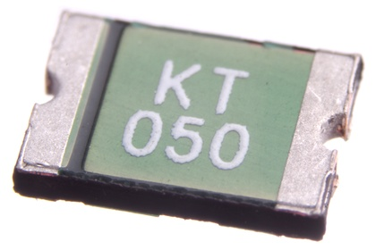

SMD (1812) 500 mA Resetable Fuse - RF805

Summary
Name: SMD (1812) 500 mA Resetable Fuse
ID: REFU-1812-X-A05D-01
Hex ID: RF805
WebPage: https://github.com/oomlout/oomlout-OOMP/wiki/REFU-1812-X-A05D-01
Short URL: http://oom.lt/RF805
Revision History: https://github.com/oomlout/oomlout-OOMP/blob/master/parts/REFU-1812-X-A05D-01/
| Type |
Size |
Color |
Description |
Index |
REFU
Resetable Fuse |
1812
SMD (1812) |
X
|
A05D
500 mA |
01
|
Images
About
This part is awaiting a description.
Specifications
| Info |
Value |
| Type |
Resetable Fuse |
| Size |
SMD (1812) |
| Description |
500 mA |
| Width |
4.5 mm |
| Height |
0.75 mm |
| Length |
3.25 mm |
| Package Marking |
50## |
| Number of Pins |
2 |
Extra Details
Spotted a mistake, want to add more? Let us know oomp@oomlout.com
All images and resources are licensed [CC BY-SA] unless otherwise stated (ie. the datasheets)